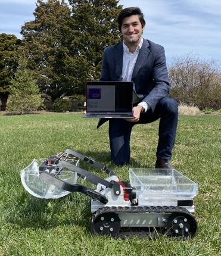

Stanford
Watch This Space...
BBN
Cool things. Get in touch!
Harvard
D.O.G.S.: A Robotic Solution for Dog Waste Collection in a Service Dog Facility
Harvard Senior Capstone Project
-
Senior project spotlight: Robert Collins
-
Seniors honored for exceptional work: Dean's Award recipients earn praise for capstone projects
A service dog training non-profit has to deal with a lot of dog waste. Volunteers spend a lot of their time picking it up. I try to automate that process.
Interaction of Moving Golf Ball with Stationary Club
Harvard ME128
Golf would be very different if a moving ball hit a stationary club. But how different?

Dot Hunter
Harvard ES52
A classmate and I implement Duck Hunt on an LED strip, using analog and digital electronics for gameplay, and an Arduino for graphics.
Media to comeLEDArcade
Harvard CS50
I program an Arduino with a suite of games played on an LED strip.
Media to come